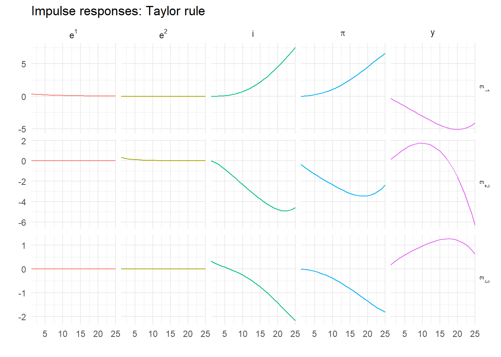
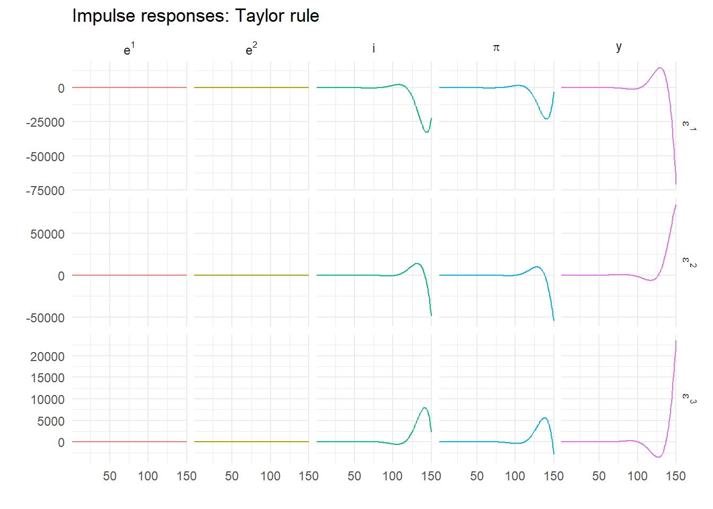
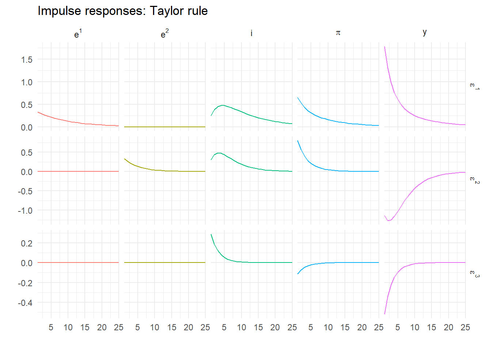
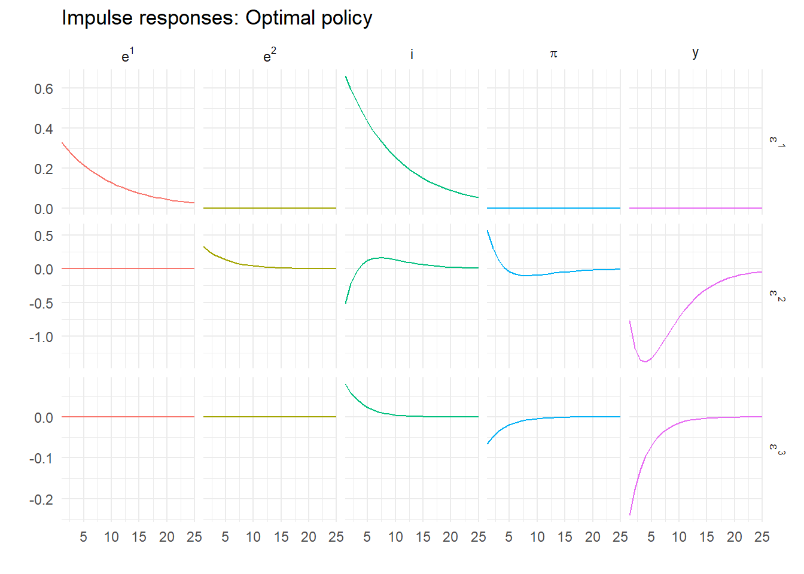
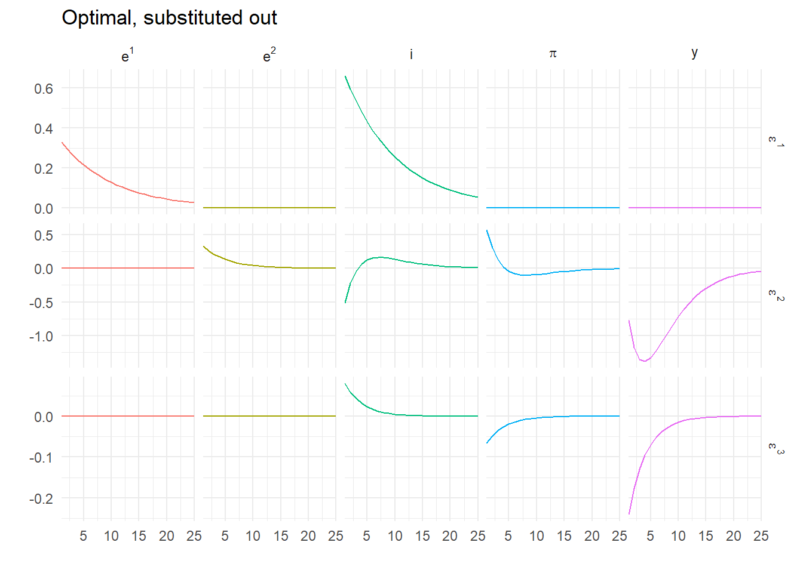

library(tidyverse)14 Linear rational expectations models
14.1 Introduction
How do we solve rational expectations models? What does that even mean? Here I show how to implement versions of the Blanchard and Kahn (1980) and Klein (2000) solutions to linear rational expectations models in R. The implementation is fairly general, and copes with singular models. It is a very transparent implementation, with all the necessary code, and also shows how to calculate and plot impulse responses.
14.2 Model
We take a simple New Keynesian model \[\begin{align} y_t &= y_{t+1}^e-\frac{1}{\sigma} (i_t - \pi_{t+1}^e) + e_t^1 \\ \pi_t &= \beta \pi_{t+1}^e + \kappa y_t + e_t^2 \\ i_t &= \gamma i_{t-1} + (1-\gamma) \delta \pi_t + \varepsilon_t^3 \\ e_t^1 &= \rho_1 e_{t-1}^1 + \varepsilon_t^1 \\ e_t^2 &= \rho_2 e_{t-1}^2 + \varepsilon_t^2 \end{align}\] The model comprises a dynamic IS curve, a Phillips Curve and a policy rule with smoothing. There are three shocks, two of which are persistent. This we need to write in the general algebraic linear state-space form: \[ E\begin{bmatrix} z_t \\ x_{t+1}^e \end{bmatrix} = A \begin{bmatrix} z_{t-1} \\ x_t \end{bmatrix} + B \varepsilon_t \] We map our variables to their algebraic equivalent as (\(z_t\), \(x_t\)) \(=\) ((\(e^1_t\), \(e^2_t\), \(i_t\)), (\(y_t\), \(\pi_t\))). Then the model in state-space form but including the matrix \(E\) is \[ \begin{bmatrix} 1 & 0 & 0 & 0 & 0 \\ 0 & 1 & 0 & 0 & 0 \\ 0 & 0 & 1 & 0 & 0 \\ 1 & 0 & -\frac{1}{\sigma} & 1 & \frac{1}{\sigma} \\ 0 & 1 & 0 & 0 & \beta \end{bmatrix} \begin{bmatrix} e^1_t \\ e^2_t \\ i_t \\ y^e_{t+1} \\ \pi^e_{t+1} \end{bmatrix} = \begin{bmatrix} \rho_1 & 0 & 0 & 0 & 0 \\ 0 & \rho_2 & 0 & 0 & 0 \\ 0 & 0 & \gamma & 0 & (1-\gamma)\delta \\ 0 & 0 & 0 & 1 & 0 \\ 0 & 0 & 0 & -\kappa & 1 \end{bmatrix} \begin{bmatrix} e^1_{t-1} \\ e^2_{t-1} \\ i_{t-1} \\ y_t \\ \pi_t \end{bmatrix} + \begin{bmatrix} 1 & 0 & 0 \\ 0 & 1 & 0 \\ 0 & 0 & 1 \\ 0 & 0 & 0 \\ 0 & 0 & 0 \end{bmatrix} \begin{bmatrix} \varepsilon^1_t \\ \varepsilon^2_t \\ \varepsilon^3_t \end{bmatrix} \] Anyone wanting to code up solutions should familiarize themselves with this before continuing.
14.2.1 Coding the model
Before we begin coding this in R, load the tidyverse libraries so we can do impulse responses with our usual tool kit and then we can forget about it.
Set the model parameters
nf <- 2
ns <- 5
ne <- 3
np <- ns-nf
beta <- 0.99 # Discount factor
sigma <- 2.0 # Elas. substitution
kappa <- 0.075 # Slope PC
delta <- 1.5 # Inflation feedback
gamma <- 0.75 # Smoothing
rho_1 <- 0.9 # AR1
rho_2 <- 0.8 # AR1
Omega <- diag(c(0.33,0.33,0.33)) # SE of 3 shocksNow define the model matrices ‘long hand’ and some variable names, which we put in labels.
labels <- c("e^1","e^2","i","y","pi")
E <- matrix(0,ns,ns)
A <- matrix(0,ns,ns)
B <- diag(1,ns,ne)
# Now put the equations in matrix form
diag(E[1:2,1:2]) <- 1
diag(A[1:2,1:2]) <- c(rho_1, rho_2)
E[3,3] <- 1
E[4,c(1, 3, 4, 5)] <- c(1, -1/sigma, 1, 1/sigma)
E[5,c(2, 5)] <- c(1, beta)
A[3,c(3, 5)] <- c(gamma, (1-gamma)*delta)
A[4,4] <- 1
A[5,c(4,5)] <- c(-kappa, 1)where for example, \(E\) and \(A\) are \[\begin{equation} E = \left[\begin{matrix}1 &0 &0 &0 &0 \\0 &1 &0 &0 &0 \\0 &0 &1 &0 &0 \\1 &0 &-0.5 &1 &0.5 \\0 &1 &0 &0 &0.99 \\\end{matrix}\right] \end{equation}\] \[\begin{equation} A = \left[\begin{matrix}0.9 &0 &0 &0 &0 \\0 &0.8 &0 &0 &0 \\0 &0 &0.75 &0 &0.375 \\0 &0 &0 &1 &0 \\0 &0 &0 &-0.075 &1 \\\end{matrix}\right] \end{equation}\] Calculate the reduced form state-space model \[\begin{equation} \begin{bmatrix} z_t \\ x_{t+1}^e \end{bmatrix} = C \begin{bmatrix} z_{t-1} \\ x_t \end{bmatrix} + D \varepsilon_t \end{equation}\] which is done in R very simply as
C <- solve(E,A)
D <- solve(E,B)Why can’t we solve this for impulse responses?
The following function simulates the impulse responses of a model in a loop within a loop1 and returns the time series in a suitably organised data frame.
impulse_responses <- function(P, Q, Omega, labels, T) {
s <- matrix(0, ncol(Q), 1)
z <- matrix(0, nrow(Q), T)
rownames(z) <- labels
dza <- NULL
for (j in 1:ncol(Q)) {
s[j] <- Omega[j,j]
z[,1] <- Q %*% s
for (i in 1:(T-1)) {
z[,i+1] <- P %*% z[,i]
}
s[j] <- 0
dz <- as_tibble(t(z)) %>%
mutate(Period = 1:T, Shock = paste0("epsilon^",j))
dza <- bind_rows(dza,dz)
}
return(dza)
}A function to plot the impulses will be useful, so we create one.
response_plot <- function(series, title) {
return(pivot_longer(series, cols = -c(Period,Shock), names_to="Var", values_to = "Val") %>%
ggplot() +
geom_line(aes(x=Period, y=Val, group=Shock, colour=Var), show.legend=FALSE) +
facet_grid(Shock~Var, scales="free", labeller=label_parsed) +
scale_x_continuous(expand=c(0,0)) +
theme_minimal() +
labs(title=title, x="",y=""))
}Call the impulse response function using the model \(C\) and \(D\).
T <- 25
z <- impulse_responses(C, D, Omega, labels, T)and plot
response_plot(z, "Impulse responses: Taylor rule")
Oh! That’s not looking good. Let’s try a few more periods.
T <- 150
z <- impulse_responses(C, D, Omega, labels, T)
response_plot(z, "Impulse responses: Taylor rule")
This is clearly exploding. But it’s rational – we’re solving forward so expectations are always fulfilled. This is a key the insight of the early rational expectations modellers – rational isn’t enough, non-explosive is necessary too. Fortunately we know how to find this.
14.3 Blanchard and Kahn (1980)
To solve this model to give a unique stable rational expectations equilibrium, we appeal to the following. Consider the eigenvalue decomposition \[ MC=\Lambda M \] where \(\Lambda\) is a diagonal matrix of eigenvalues in increasing absolute value and \(M\) is a non-singular matrix of left eigenvectors. Note that computer routines (including the one in R) usually calculate right eigenvectors such that \(CV=V\Lambda\) and that \(M=V^{-1}\), so be aware of this in what follows.
We can diagonalise \(C\) and write it as \(C=M^{-1}\Lambda M\). So pre-multiplying the reduced form model by \(M\) gives \[ M \begin{bmatrix} z_t \\ x_{t+1}^e \end{bmatrix} = \Lambda M \begin{bmatrix} z_{t-1} \\ x_t \end{bmatrix} + M D \varepsilon_t \] Blanchard and Kahn (1980) (following Vaughan (1970)) show uniqueness requires as many unstable eigenvalues as jump variables. To see this, define \[ \begin{bmatrix} \xi_{t-1}^{s} \\ \xi_t^{u} \end{bmatrix} = \begin{bmatrix} M_{11} & M_{12} \\ M_{21} & M_{22} \end{bmatrix} \begin{bmatrix} z_{t-1} \\ x_t \end{bmatrix} \] Write the normalized model as \[ \begin{bmatrix} \xi_t^s \\ \xi_{t+1}^u \end{bmatrix} = \begin{bmatrix} \Lambda_s & 0 \\ 0 & \Lambda_u \end{bmatrix} \begin{bmatrix} \xi_{t-1}^s \\ \xi_t^u \end{bmatrix} + \begin{bmatrix} M_1 \\ M_2 \end{bmatrix} D\varepsilon_t \] where the eigenvalues are split into stable (\(\Lambda_s\)) and unstable (\(\Lambda_u\)). If we ignore the stochastic bit for a moment \[ \begin{bmatrix} \xi_t^s \\ \xi_{t+1}^u \end{bmatrix} = \begin{bmatrix} \Lambda_s & 0 \\ 0 & \Lambda_u \end{bmatrix} \begin{bmatrix} \xi_{t-1}^s \\ \xi_t^u \end{bmatrix} \]
We seek a non-explosive solution, and this turns out to be easy to find using the following
- The dynamics of \(\xi_t^u\) are determined by \(\Lambda_u\) and nothing else;
- If they don’t start at \(0\) they must explode;
- This implies they must start at \(0\) and are always \(0\).
Thus the definition of the canonical variables necessarily implies \[ \begin{bmatrix} \xi_{t-1}^s \\ 0 \end{bmatrix} = \begin{bmatrix} M_{11} & M_{12} \\ M_{21} & M_{22} \end{bmatrix} \begin{bmatrix} z_{t-1} \\ x_t \end{bmatrix} \]
From this it is clear that the jump variables themselves are only on the saddle path if \[ M_{21} z_{t-1} + M_{22} x_t = 0 \]
The rational solution implies that the jump variables are linearly related to the predetermined ones through \[\begin{align} x_t &= -M_{22}^{-1} M_{21}z_{t-1} \\ &= N z_{t-1} \end{align}\] We’ll deal with the shocks in a moment.
How do we do this in R? First, find the eigenvalue decomposition of \(C\) using
m <- eigen(C, symmetric=FALSE)which yields
eigen() decomposition
$values
[1] 1.0715518+0.092734i 1.0715518-0.092734i 0.9000000+0.000000i
[4] 0.8000000+0.000000i 0.6548762+0.000000i
$vectors
[,1] [,2] [,3] [,4]
[1,] 0.0000000+0.0000000i 0.0000000+0.0000000i 0.2854942+0i 0.00000000+0i
[2,] 0.0000000+0.0000000i 0.0000000+0.0000000i 0.0000000+0i 0.09783896+0i
[3,] 0.1599159-0.5089425i 0.1599159+0.5089425i 0.7830500+0i 0.49622464+0i
[4,] -0.6991064+0.0000000i -0.6991064+0.0000000i 0.4552131+0i -0.86012270+0i
[5,] 0.2629802-0.3968579i 0.2629802+0.3968579i 0.3132200+0i 0.06616328+0i
[,5]
[1,] 0.0000000+0i
[2,] 0.0000000+0i
[3,] 0.6351203+0i
[4,] -0.7554249+0i
[5,] -0.1611069+0iHowever this calculates right eigenvectors. We will need to invert it for left ones. Given the number of jump variables in the model satisfies the Blanchard-Kahn conditions of as many unstable roots (1.072+0.093i, 1.072-0.093i) as jump variables (2) we can calculate the reaction function from the eigenvectors
iz <- 1:np
ix <- (np+1):ns
M <- solve(m$vectors[,ns:1]) # Invert & reverse order for increasing abs value
N <- -Re(solve(M[ix,ix], M[ix,iz])) # Drop tiny complex bits (if any)where iz are the indices of the first np variables and ix those of the remaining nf ones.
14.3.1 Stochastic part
What about the shocks? Assume the stochastic reaction function is \[ x_t = N z_{t-1} + G \varepsilon_t \] Following Blake (2004), note that \(x_{t+1}^e = N z_t\) as the expected value of \(\varepsilon_{t+1}=0\), meaning we can write \[ Nz_t = C_{21}z_{t-1} + C_{22} x_t + D_2 \varepsilon_t \] or \[ N\left( C_{11}z_{t-1} + C_{12}x_t + D_1 \varepsilon_t\right) = C_{21}z_{t-1} + C_{22} x_t + D_2 \varepsilon_t \] Gathering terms we obtain \[ (C_{22} - N C_{12}) x_t = (NC_{11} - C_{21}) z_{t-1} + (N D_1 - D_2) \varepsilon_t \] which implies \[ G=(C_{22} - N C_{12})^{-1}(N D_1 - D_2) \] Notice it also implies \(N = (C_{22} - N C_{12})^{-1}(NC_{11} - C_{21})\). It is this fixed point nature of the solution for \(N\) – which in turn implies the quadratic matrix equation \(C_{21} = NC_{11} - C_{22}N + N C_{12}N\) – that means we need to use the Blanchard and Kahn (1980) method in the first place.
All of this means that
G <- solve((C[ix,ix] - N %*% C[iz,ix]), (N %*% D[iz,]- D[ix,]))so for our model and parameters \(N\) and \(G\) are
\[\begin{equation} N = \left[\begin{matrix}4.8568 &-2.7586 \\-1.1894 &1.7929 \\1.9628 &-0.2537 \\\end{matrix}\right] \end{equation}\] \[\begin{equation} G = \left[\begin{matrix}5.3964 &-3.4483 \\-1.5859 &1.9921 \\2.4535 &-0.3382 \\\end{matrix}\right] \end{equation}\]
The ‘fixed point’ check is that the following should be the same as \(N\)
solve((C[ix,ix] - N %*% C[iz,ix]), (N %*% C[iz,iz]- C[ix,iz])) [,1] [,2] [,3]
[1,] 4.85680 -2.758647 -1.1894200
[2,] 1.79286 1.962790 -0.2536635which it is.
The solved model is finally \[\begin{align} \begin{bmatrix} z_t \\ x_t \end{bmatrix} &= \begin{bmatrix} C_{11}+C_{12}N & 0 \\ N & 0 \end{bmatrix} \begin{bmatrix} z_{t-1} \\ x_{t-1} \end{bmatrix} + \begin{bmatrix} D_1+C_{12}G \\ G \end{bmatrix} \varepsilon_t \\ &= P \begin{bmatrix} z_{t-1} \\ x_{t-1} \end{bmatrix} + Q \varepsilon_t \end{align}\] which can be coded as
P <- cbind(rbind((C[iz,iz] + C[iz,ix] %*% N), N), matrix(0,ns,nf))
Q <- rbind(D[iz,] + C[iz,ix] %*% G, G)14.3.2 Digression – right eigenvector version
It turns out that we could use the output from the standard eigenvalue/vector routine directly by exploiting the following. This time, let \(M\) be the matrix of right eigenvectors so \[
C M = M \Lambda \text{ or } C = M\Lambda M^{-1}
\]
and \[
\begin{bmatrix} M_{11} & M_{12} \\ M_{21} & M_{22} \end{bmatrix}
\begin{bmatrix} \xi_{t-1}^s \\ \xi_t^u \end{bmatrix}
=
\begin{bmatrix} z_{t-1} \\ x_t \end{bmatrix}
\]
Written this way around, if \(\xi_t^{u}=0\) \(\forall\ t\) then (again ignoring stochastics)
\[ M_{11} \xi_{t-1}^s = z_{t-1}, \ M_{21}\xi_t^s = x_t \]
\[ \Rightarrow x_t = M_{21} M_{11}^{-1} z_t \] so
M <- m$vectors[,ns:1] # Don't invert as already right vectors, but reorder
Re(M[ix,iz] %*% solve(M[iz,iz])) # Again, drop tiny complex bits [,1] [,2] [,3]
[1,] 4.85680 -2.758647 -1.1894200
[2,] 1.79286 1.962790 -0.2536635The result is identical. This method is particularly useful if there are fewer predetermined variables than jumps as the matrix we need to invert is of the same dimension as the predetermined variables this way round.
14.3.3 Impulse responses
We now call the impulse response function using the model solved for rational expectations.
T <- 25
z <- impulse_responses(P, Q, Omega, labels, T)Now plot these responses
response_plot(z, "Impulse responses: Taylor rule")
Now, that looks better! It is no longer explosive. It also makes complete economic sense, which you can verify by going through the dynamics of the different demand, supply and monetary shocks.
14.4 Generalized solution
Sometimes for a model \(E\) is singular. A more general solution was proposed by Klein (2000), that doesn’t require \(E\) to be non-singular. This uses a generalized Schur decomposition instead of an eigenvalue one and is applied to the structural model represented by the matrix pencil \((A,E)\), and is considered much more numerically stable (see Pappas, Laub, and Sandell (1980)). The generalized Schur form of \((A,E)\) is \((QTZ', QSZ')\), so we can write the model as \[ E \begin{bmatrix} z_t \\ x_{t+1}^e \end{bmatrix} \equiv QTZ' \begin{bmatrix} z_t \\ x_{t+1}^e \end{bmatrix} \equiv QT \begin{bmatrix} \xi_t^s \\ \xi_{t+1}^u \end{bmatrix} \] and \[ A \begin{bmatrix} z_{t-1} \\ x_t \end{bmatrix} \equiv QSZ' \begin{bmatrix} z_{t-1} \\ x_t \end{bmatrix} \equiv QS\begin{bmatrix} \xi_{t-1}^s \\ \xi_t^u \end{bmatrix} \] so the model pre-multiplied by \(Q'\) is \[ T \begin{bmatrix} \xi_{t+1}^s \\ \xi_{t+1}^u \end{bmatrix} = S \begin{bmatrix} \xi_t^s \\ \xi_t^u \end{bmatrix} + Q'B\varepsilon_t \]
We use the function gqz from the library geigen for this
d <- geigen::gqz(A, E, sort="S") # Option "S" puts the stable roots firstWe can check that this is actually saddle path using gevalues() to get all the eigenvalues from the generalized Schur decomposition, and the unstable ones are
e <- geigen::gevalues(d)
e[abs(e) > 1][1] 1.071552+0.092734i 1.071552-0.092734iThe number of stable roots is returned in d$sdim which is 3.
We then modify our solution function to calculate Ns and Gs using the matrix Z and a generalized version of the formula for \(G\) and calculate the reduced form model Ps and `Q which are \[\begin{align}
N_s &= Z_{21} Z_{11}^{-1} \\
H &= (E_{11} + E_{12} N_s)^{-1} \\
W &= (E_{21} + E_{22} N_s) H\\
G_s &= (A_{22} - W A_{12})^{-1} (W B_1 - B_2) \\
P_s &= H (A_{11} + A_{12} N_s) \\
Q_s &= H (B_1 + A_{12} G_s)
\end{align}\] Verify this yourself with a bit of matrix algebra!
The R code for this is
solveGenBK <- function(E,A,B,n) {
d <- geigen::gqz(A, E, sort="S")
np <- d$sdim
ns <- nrow(E)
print(paste("Number of unstable roots is", ns-np))
if (n == np) {
iz <- 1:n
ix <- (n+1):ns
Ns <- d$Z[ix,iz] %*% solve(d$Z[iz,iz])
H <- solve(E[iz,iz] + E[iz,ix] %*% Ns)
W <- (E[ix,iz] + E[ix,ix] %*% Ns) %*% H
Gs <- solve((A[ix,ix] - W %*% A[iz,ix]), (W %*% B[iz,] - B[ix,]))
As <- H %*% (A[iz,iz] + A[iz,ix] %*% Ns)
Bs <- H %*% (B[iz,] + A[iz,ix] %*% Gs)
return(list(P=cbind(rbind(As,Ns),matrix(0,ns,ns-n)), Q=rbind(Bs, Gs)))
}
else {
return(-1)
}
}Using this on our original model gives
S <- solveGenBK(E,A,B,np)[1] "Number of unstable roots is 2"Ps <- S$P
Qs <- S$Qand comparing Ps and Qs with P and Q obtained using Blanchard-Kahn we find
round(max(abs(P-Ps), abs(Q-Qs)), 12)[1] 0They are, as expected, the same – at least up to 12 decimal places, which should be enough.
14.5 Singular models: optimal policy
However, this is an easy test. What we need is to use a model that can’t be solved using the BK method. Under optimal policy, the interest rate instrument rule is replaced with a targeting rule, so that \[ \pi_t = -\mu \Delta y_t - \varepsilon^3_t \] for some value of \(\mu\) that reflects the optimal trade-off between output (gap) growth and inflation, and we’ve included a disturbance which we can loosely describe as a monetary policy shock. We modify the model above by dropping the Taylor rule in favour of the targeting rule. This requires a lagged value of \(y\) to be created. The following does the trick
nf <- 2
ne <- 3
ns <- 6 # One extra state
np <- ns-nf
mu <- 0.75 # Representative trade-off
labels <- c("e^1","e^2","ylag","i","y","pi") # New variable order
E <- matrix(0,ns,ns)
A <- E
B <- matrix(0,ns,ne)
B[1,1] <- 1
B[2,2] <- 1
B[4,3] <- -1
diag(E[1:3,1:3]) <- 1
diag(A[1:2,1:2]) <- c(rho_1, rho_2)
A[3,5] <- 1
E[4,3] <- 1
A[4,c(3, 6)] <- c(1, -1/mu)
E[5,c(1, 4, 5, 6)] <- c(1, -1/sigma, 1, 1/sigma)
A[5,5] <- 1
E[6,c(2, 6)] <- c(1, beta)
A[6,c(5, 6)] <- c(-kappa, 1)The new \(E\) and \(A\) system matrices are then \[ E = \left[\begin{matrix}1 &0 &0 &0 &0 &0 \\0 &1 &0 &0 &0 &0 \\0 &0 &1 &0 &0 &0 \\0 &0 &1 &0 &0 &0 \\1 &0 &0 &-0.5 &1 &0.5 \\0 &1 &0 &0 &0 &0.99 \\\end{matrix}\right] \] \[ A = \left[\begin{matrix}0.9 &0 &0 &0 &0 &0 \\0 &0.8 &0 &0 &0 &0 \\0 &0 &0 &0 &1 &0 \\0 &0 &1 &0 &0 &-1.333 \\0 &0 &0 &0 &1 &0 \\0 &0 &0 &0 &-0.075 &1 \\\end{matrix}\right] \] Now we have a singular model. The matrix \(E\) is clearly singular as rows 3 and 4 are identical. But we have a problem using the code above. To use it we need the matrices \(H\) and \((A_{22} - W A_{21})\) to be non-singular. What to do?
There are two ways out. Klein (2000) gives a solution that depends on the decomposed matrix pencil, which is what is typically implemented, but you don’t actually need it although it is easiest. Instead, all you need to do is reorder the equations.
The real problem is that with a targeting rule that doesn’t include the interest rate, and the interest rate is now only determined by the IS curve. But we can swap the location of any two rows of the model arbitrarily. If we swap the positions of the equations for the IS curve and the targeting rule (rows 4 and 5) using the following
E[4:5,] <- E[5:4,]
A[4:5,] <- A[5:4,]
B[4:5,] <- B[5:4,]then the model is unchanged but now we have \[ E_{11} = \left[\begin{matrix}1 &0 &0 &0 \\0 &1 &0 &0 \\0 &0 &1 &0 \\1 &0 &0 &-0.5 \\\end{matrix}\right] \] so \(E_{11} + E_{12}N\) is likely non-singular (it is). Also, note after the re-ordering \(A_{22}\) is \[ A_{22} = \left[\begin{matrix}0 &-1.33 \\-0.07 &1 \\\end{matrix}\right] \] which is guaranteed non-singular for zero \(W\). We can now proceed as before. First, check for saddle path stability
e <- geigen::gevalues(geigen::gqz(A, E, sort="S"))
e[abs(e) > 1][1] 1.378195 -Infwhich confirms that it has a unique saddle path stable solution. This is
So <- solveGenBK(E,A,B,np)[1] "Number of unstable roots is 2"Po <- So$P
Qo <- So$QThe solved model is then
Po [,1] [,2] [,3] [,4] [,5] [,6]
[1,] 0.9 0.000000 0.0000000 0 0 0
[2,] 0.0 0.800000 0.0000000 0 0 0
[3,] 0.0 -1.863455 0.7329156 0 0 0
[4,] 1.8 -1.241330 -0.2446879 0 0 0
[5,] 0.0 -1.863455 0.7329156 0 0 0
[6,] 0.0 1.397591 0.2003133 0 0 0Qo [,1] [,2] [,3]
[1,] 1 0.000000 0.0000000
[2,] 0 1.000000 0.0000000
[3,] 0 -2.329318 -0.7329156
[4,] 2 -1.551663 0.2446879
[5,] 0 -2.329318 -0.7329156
[6,] 0 1.746989 -0.200313314.5.1 Optimal impulse responses
We can now simulate the model under optimal policy and plot using
zo <- impulse_responses(Po, Qo, Omega, labels, T) %>%
select(-ylag) # Drop duplicate series
response_plot(zo, "Impulse responses: Optimal policy")
14.6 Dummy jumps
But this isn’t the only way to get this to work. Effectively what we just did was create an extra predetermined variable and reorder the system to give us non-singularity. What if instead of including an unused \(i_{t-1}\) on the right hand side, we instead include an unused \(i^e_{t+1}\) on the left hand side? So we swap to having one more jump variable, one less predetermined one?
Compare the following to the previous model. When we pick out the interest rate we do so on the right hand side of the matrix equation, not the left as before.
ns <- 6 # One extra state
nf <- 3 # And one extra jump
np <- ns-nf
labels <- c("e^1","e^2","ylag","i","y","pi") # New variable order
E <- matrix(0,ns,ns)
A <- E
B <- matrix(0,ns,ne)
B[1,1] <- 1
B[2,2] <- 1
B[4,3] <- -1
diag(E[1:3,1:3]) <- 1
diag(A[1:2,1:2]) <- c(rho_1, rho_2)
A[3,5] <- 1
E[4,3] <- 1
A[4,c(3, 6)] <- c(1, -1/mu)
E[5,c(1, 5, 6)] <- c(1, 1, 1/sigma) # One less coefficient
A[5,c(4, 5)] <- c(1/sigma, 1) # One more - nothing else changes
E[6,c(2, 6)] <- c(1, beta)
A[6,c(5, 6)] <- c(-kappa, 1)This is still a singular model, as we can see from \[ E = \left[\begin{matrix}1 &0 &0 &0 &0 &0 \\0 &1 &0 &0 &0 &0 \\0 &0 &1 &0 &0 &0 \\0 &0 &1 &0 &0 &0 \\1 &0 &0 &0 &1 &0.5 \\0 &1 &0 &0 &0 &0.99 \\\end{matrix}\right] \] with column 4 all zeros. Is this model saddle path stable?
e <- geigen::gevalues(geigen::gqz(A, E, sort="S") )
e[abs(e) > 1][1] 4.787695e+15 1.378195e+00 -InfAgain, it is with an extra unstable root for the extra jump variable. We could simplify the solution. As that top left 3 by 3 block, \(E_{11}\), is the identity matrix and \(E_{12}\) is all zeros this Ei is always an identity matrix. However, here we simply re-use solveGenBG
So2 <- solveGenBK(E,A,B,np)[1] "Number of unstable roots is 3"Po2 <- So2$P
Qo2 <- So2$QNow the solved model is
Po2 [,1] [,2] [,3] [,4] [,5] [,6]
[1,] 0.9 0.000000 0.0000000 0 0 0
[2,] 0.0 0.800000 0.0000000 0 0 0
[3,] 0.0 -1.863455 0.7329156 0 0 0
[4,] 1.8 -1.241330 -0.2446879 0 0 0
[5,] 0.0 -1.863455 0.7329156 0 0 0
[6,] 0.0 1.397591 0.2003133 0 0 0Qo2 [,1] [,2] [,3]
[1,] 1 0.000000 0.0000000
[2,] 0 1.000000 0.0000000
[3,] 0 -2.329318 -0.7329156
[4,] 2 -1.551663 0.2446879
[5,] 0 -2.329318 -0.7329156
[6,] 0 1.746989 -0.2003133which is actually identical to our previous solution. This is because I have preserved the order of the solved-out variables, and shows that the swap from a predetermined to a jump variable is completely arbitrary.
14.7 Substituting out
But even this doesn’t exhaust the possible re-parametrisations of the model. We can reduce the number of jump variables to 1 and find the same solution. There exist formal methods for reducing models (see King and Watson (2002)) but there is an obvious way to proceed here. From the targeting rule, it must be that \[ y^e_{t+1} = y_t - \frac{1}{\mu}\pi^e_{t+1} \] as the expected shock is zero. This means the IS curve can be rewritten \[ y_t = y_t - \frac{1}{\mu}\pi^e_{t+1} - \frac{1}{\sigma} \left (i_t - \pi_{t+1}^e \right ) + e_t^1 \] implying \[ i_t = \left (1 - \frac{\sigma}{\mu} \right )\pi_{t+1}^e + \sigma e_t^1 \] This is the required interest rate consistent with the targeting rule holding. Now the only jump variable is the inflation rate as we have eliminated the expected output gap. \[\begin{align} y_t &= y_{t-1} -\frac{1}{\mu} \pi_t + \frac{1}{\mu} \varepsilon^3_t \\ \pi_t &= \beta \pi_{t+1}^e + \kappa y_t + e_t^2 \\ i_t &= \left (1 - \frac{\sigma}{\mu} \right ) \pi_{t+1}^e + \sigma e_t^1 \\ e_t^1 &= \rho_1 e_{t-1}^1 + \varepsilon_t^1 \\ e_t^2 &= \rho_2 e_{t-1}^2 + \varepsilon_t^2 \end{align}\]
We can code this
ns <- 5 # Back to 5 states
nf <- 1 # Now only one jump
np <- ns-nf
labels <- c("e^1","e^2","i","y","pi") # Lose a y
E <- matrix(0,ns,ns)
A <- E
B <- matrix(0,ns,ne)
B[1,1] <- 1
B[2,2] <- 1
B[4,3] <- -1
diag(E[1:4,1:4]) <- 1
diag(A[1:2,1:2]) <- c(rho_1, rho_2)
E[3,c(1, 3, 5)] <- c(-sigma, 1, sigma/mu-1)
A[4,c(4,5)] <- c(1, -1/mu)
E[5,c(2, 4, 5)] <- c(1, kappa, beta)
A[5,5] <- 1and solve it using
Ss <- solveGenBK(E,A,B,np)[1] "Number of unstable roots is 1"Ps <- Ss$P
Qs <- Ss$QCompare the realized of Ps
Ps [,1] [,2] [,3] [,4] [,5]
[1,] 0.9 0.000000 0 0.0000000 0
[2,] 0.0 0.800000 0 0.0000000 0
[3,] 1.8 -1.241330 0 -0.2446879 0
[4,] 0.0 -1.863455 0 0.7329156 0
[5,] 0.0 1.397591 0 0.2003133 0with Po above, say. This is the most ‘efficient’ way of programming the model, in that we have only five states, and indeed the repeated behavioural equations we had before have disappeared in the reduced form solution. Just to confirm this, simulating and plotting this version gives
response_plot(impulse_responses(Ps,Qs,Omega,labels,T), "Optimal, substituted out")
which are identical results to those above. But of course \(E\) is now invertible so we could solve this using the simplest Blanchard-Kahn variant. Try it!
Sometimes a loop is the right way to do something.↩︎